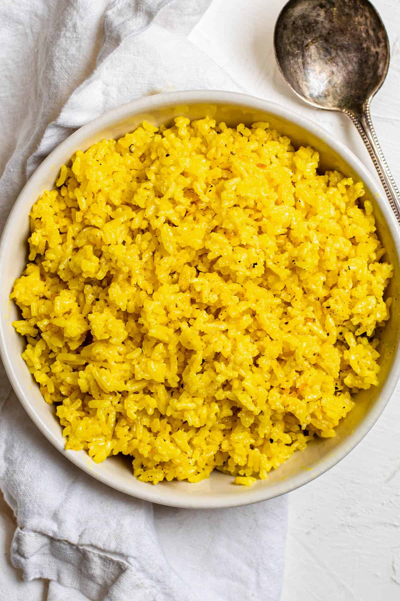

Ingredients
- 2 Cups Jasmine or Basmati Rice
- 1 Tbsp Coconut Oil
- 1 Jalapeño, diced
- 1 Shallot, diced
- 1 Tsp Salt
- 1/2 Tsp Black Pepper
- 1 Tsp Ground Turmeric
- 13.5 Oz Can of Coconut Milk
- 1 Cup Water
- 2 Tsp Lime Zest
- 1/3 Cup Chopped Cilanto (Optional)
Steps
- Rice rice until the water runs clear, set aside
- In a medium pot on medium heat, add coconut oil, jalapeño, pepper, turmeric, and shallot.
- Sauté for 1-2 minutes until fragrant.
- Add rice, salt, coconut milk, lime zest, and water. Stir together and increase to medium-high heat.
- Once it comes to a boil, reduce the heat, cover, and cook for 14-16 minutes.
- Fluff with fork and add in cilantro.